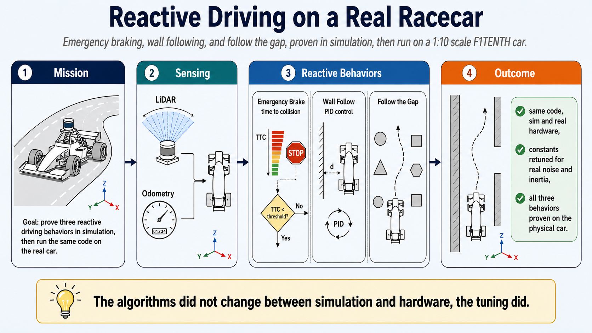
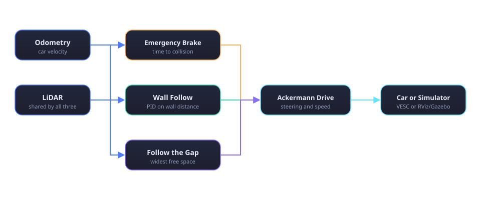

F1TENTH Autonomous Racing
A 1:10 scale autonomous racecar running three core driving behaviors, automatic emergency braking, PID based wall following, and follow the gap obstacle avoidance, each one proven first in simulation, then ported to run on the real car.
Mission

The F1TENTH platform is a 1:10 scale car with a real LIDAR, a real VESC motor controller, and real inertia, which makes it a very different environment from a simulated robot. The mission was the same for every behavior: get it working in RViz and Gazebo simulation first, then port the same idea onto the physical car's hardware topics and constants, and see what breaks. Almost everything broke a little. That gap between simulation and hardware is most of what this project actually taught.
Three behaviors carry the project: automatic emergency braking that watches time to collision and stops the car before impact, PID based wall following that keeps the car centered in a corridor using LIDAR geometry, and follow the gap, a reactive algorithm that steers toward the widest open space in the scan without needing a map or a planner. A larger checkpoint layered a vision stack on top of this, semantic segmentation and YOLO based object detection for lane following, built with LibTorch, but the three reactive behaviors above are the ones proven out on video and covered in detail below.
System overview
All three behaviors read the same LIDAR scan and publish the same Ackermann drive message, they are separate checkpoints rather than one fused system, each one is its own node, tuned and demonstrated on its own.

Emergency braking, time to collision
The safety node watches the LIDAR scan together with the car's own velocity from odometry, and for every beam roughly in the direction of travel, it computes time to collision, distance divided by closing speed. Only beams that are actually closing count, a beam pointed away from the direction of travel does not get evaluated.
On the real car, the same idea also needed a sign check for reverse motion, since the checkpoint that carries this safety node drives the car backward during its startup routine. The braking logic explicitly watches for negative velocity along each beam's angle rather than assuming the car only ever moves forward. When any beam's time to collision drops under a tuned threshold, the node publishes a hard stop, overriding whatever speed command was already in flight.
Wall following, PID control
Wall following keeps the car a fixed distance from the left wall using two single beam LIDAR readings instead of a full scan. One beam looks roughly sideways at the wall, the other looks forward at an angle, and simple trigonometry between the two gives both the car's current perpendicular distance to the wall and the angle it is drifting at. That angle lets the controller project the distance forward by a short lookahead distance, so the error fed into the PID loop reflects where the car is about to be, not just where it is right now.
The gains were tuned by hand on the real car, proportional gain carrying most of the correction, a small derivative term to damp oscillation, and a very small integral term to correct steady state drift without letting error accumulate out of control. Velocity is not constant either, the controller drops speed sharply whenever the commanded steering angle grows past a small threshold, so the car only goes fast when it is pointed roughly straight down the corridor.
Follow the gap
Follow the gap needs no wall reference and no map, only the LIDAR scan. Raw ranges are smoothed with a short moving average to remove single beam noise, clipped to a maximum useful range, and limited to a forward looking angular window so the car does not react to obstacles behind it. A small bubble is then cleared around whichever point is currently closest, since that point represents the obstacle the car is most at risk of clipping, and the algorithm searches the remaining ranges for the longest run of beams past a free space threshold. The midpoint of that widest gap becomes the new steering target.
Speed again scales with how sharp that steering angle is, small angle turns hold a higher speed, sharp turns slow the car down, since a wide gap found at a sharp angle usually means a corner rather than a straightaway.
From simulation to the real car
Every one of these three behaviors exists twice in the repository, once as a simulation node built and tuned in RViz, and once as its real car counterpart with its own tuned constants and its own hardware topic, the same Ackermann drive command, but published to the actual VESC motor controller's input topic rather than a simulated one. Keeping both versions around instead of overwriting the simulation code was deliberate, the simulation copy is still the fastest way to sanity check a change in logic before ever touching the real hardware.
- Braking threshold, simulation 0.4 s Time to collision cutoff in RViz
- Braking threshold, real car 0.9 s More margin once real noise and inertia entered the loop
- Wall follow gains kp 0.55 kd 0.2, ki 0.0001, tuned on the physical car
The differences between the two versions are the actual lesson. A time to collision threshold that felt safe in simulation left barely enough stopping distance on the real car once real LIDAR noise and real wheel inertia were in the loop, more than doubling the threshold on hardware. PID gains tuned in a clean simulated corridor needed retuning against a real wall with real reflective noise. None of the algorithms changed between simulation and hardware, the constants around them did, and figuring out which constants mattered enough to retune was most of the actual work.